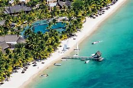

Here, you can get some wonderful information for all our destinations from different
bloggers,if you have any doubts,fear no more cause all the information you need is here.
just read on and get the information you need
DESTINATION 1 : DUBAI
PALM JUMEIRAH
The Palm Jumeirah is an archipelago of artificial islands on the Persian Gulf in Jumeirah, Dubai, United Arab Emirates.
It is part of a larger series of developments called the Palm Islands, including Palm Jebel Ali and Deira Islands, which,
when completed, will together increase Dubai's shoreline by a total of 520 kilometres (320 mi).
It has a population of over 25,000 as of 2022.
The islands were created using land reclamation.
The Palm Jumeriah construction was done by a Dutch specialist dredging company,
Van Oord. The same company also created The World.
The recently opened destinations The Pointe, Club Vista Mare and Nakheel Mall are the
latest additions to Palm Jumeirah.
The Burj Khalifa is the tallest building in the world and a global icon.
Truly a feat of engineering, the building represents the conceptual heart and soul
of the city of Dubai.At 828m tall, this magnificent structure is located next to Dubai
Mall and has drawn visitors from all over the world since opening in 2010.
The unmatched Burj Khalifa view can be taken in from not one but two observations decks
– the two-storey At the Top on the 124th and 125th floors, as well as one of the world’s
highest observation decks (555m) on the 148th floor.
NEARBY HOTELS AND DESTINATIONS.
Once in Burj Khalifa,there are many fun activities to do nearby,so aside from getting to
see the tallest building ever,you are also hooked up with some fun activities to do,you can
visit the ice rink,shop till you drop at the Dubai Mall or even enjoy delicious cuisine at all
the restraunts around the Burj. Find more information down below.
Dubai Mall (originally known as The Dubai Mall until 2023) (Arabic: دبي مول "Dubai Mall") is a shopping mall in Dubai.
It is the second-largest mall in the world by total land area and the 26th-largest shopping mall in the world by gross
leasable area, tying with West Edmonton Mall and Fashion Island (Bangkok)—both of which are older than it. It has a total
retail floor area of 8946,000 square metres (5,400,000 sq ft). Located in Dubai, United Arab Emirates, it is part of the
20-billion-dollar Downtown complex (called Downtown Dubai) adjacent to the iconic Burj Khalifa, and includes over 1,200
shops. In 2011, it was the most visited building on the planet, attracting over 54 million visitors each year.
Twice delayed, Dubai Mall opened on 4 November 2008, with about 1000 retailers, marking the world's second-largest
ever mall opening in retail history behind West Edmonton Mall. However, it does not have the most gross leasable space,
and is surpassed in that category by nineteen malls including the New South China Mall, which is the world's second-largest
, Golden Resources Mall, SM City North Edsa, and SM Mall of Asia. In January 2023, the shopping mall announced that it is
officially changing its name from "The Dubai Mall" to "Dubai Mall." The minor name change eliminated one word from its title
– "The."
Mauritius, officially the Republic of Mauritius, is an island country in the Indian Ocean,
about 2,000 kilometres (1,100 nautical miles) off the southeastern coast of East Africa,
east of Madagascar. It includes the main island (also called Mauritius), as well as Rodrigues,
Agaléga, and St. Brandon (Cargados Carajos shoals). The islands of Mauritius and Rodrigues,
along with nearby Réunion (a French overseas department), are part of the Mascarene Islands.
The main island of Mauritius, where the population is concentrated, hosts the capital and largest
city, Port Louis. The country spans 2,040 square kilometres (790 sq mi) and has an exclusive economic
zone covering 2,300,000 square kilometres (670,000 square nautical miles).
TROU AUX BICHES

Set along a strip of white sandy beach on the edge of a turquoise lagoon, within the shade of a 35-hectare tropical garden,
stands the Trou aux Biches Beachcomber Golf Resort & Spa. Named for and located in the village of Trou-aux-Biches, Mauritius,
this northwest-facing hotel is perfectly placed for the best climates and dramatic sunsets. With its romantic atmosphere, the
Trou aux Biches Beachcomber provides the idyllic setting you have been dreaming of; be it for a wedding, honeymoon, anniversary,
or simply a break from the rush of everyday life.Accommodation options are plentiful, from lavish chalet-style suites to private
villas tucked among the lush gardens. With an emphasis on environmental preservation, Trou aux Biches Beachcomber Golf Resort & Spa
is the first eco-friendly resort in Mauritius, while not compromising on luxury, privacy, space, and diversity.All villas, beachfront
suites, and senior beachfront suites are equipped with private pools. Other suites curl around larger pools in quiet cul de sacs, and
as well as the main pool for all hotel guests there is a pool specifically for the Kids Club. Wherever you are, the sea is never too
far, beckoning you to relax in warm, crystal-clear waters. Other facilities include a luxurious spa with 20 cabins, a teens club, and
a range of free land and water sports. Trou aux Biches Beachcomber is home to six restaurants; L'Oasis, La Caravelle, Le Plage, Blue
Ginger, Mahiya and Il Corallo. Enjoy a world of flavours that spans from the far end of Asia to the shores of the Mediterranean Sea.
If you are thinking of a luxury holiday in Mauritius, Trou aux Biches Beachcomber Golf Resort & Spa has all that you could need. Take
that feeling of comfort and ease one step further by selecting our all-inclusive option, and let us take care of everything. Book your
stay at one of Mauritius’ finest hotels, the Trou Aux Biches Beachcomber, today.
Port Louis is the vibrant capital of Mauritius, a tropical island nation in the Indian Ocean.
It is a melting pot of cultures, where you can explore the colorful markets, mosques, temples
and churches of its diverse communities. You can also discover the rich history of the island
at the museums, monuments and forts that dot the city. Whether you want to shop at the modern
Caudan Waterfront, admire the colonial architecture of the Government House, or enjoy the views
from the Citadel, Port Louis has something for everyone. Don't miss the chance to sample the
delicious street food, such as dholl puri, roti and samosas, that reflect the island's culinary
heritage.
Maasai Mara, also sometimes spelled Masai Mara and locally known simply as The Mara, is a large national game reserve in Narok, Kenya, contiguous with the
Serengeti National Park in Tanzania. It is named in honour of the Maasai people, the ancestral inhabitants of the area, who migrated to the area from the
Nile Basin. Their description of the area when looked at from afar: "Mara" means "spotted" in the local Maasai language, because of the short bushy trees
which dot the landscape.Maasai Mara is one of the wildlife conservation and wilderness areas in Africa, with its populations of lion, leopard, cheetah and
African bush elephant. It also hosts the Great Migration, which secured it as one of the Seven Natural Wonders of Africa, and as one of the ten Wonders of
the World.The Greater Mara ecosystem encompasses areas known as the Maasai Mara National Reserve, the Mara Triangle, several Maasai group ranches, and several
conservancies.